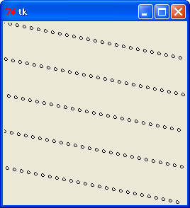
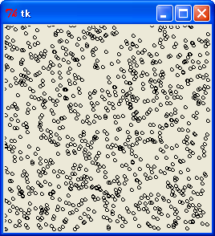
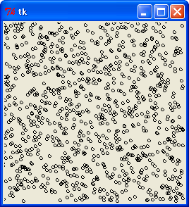
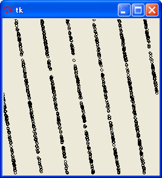
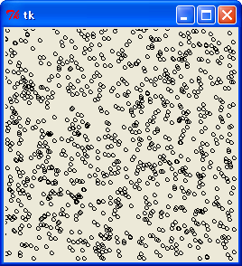
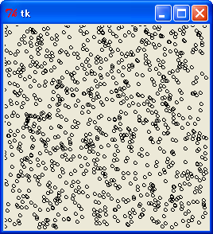
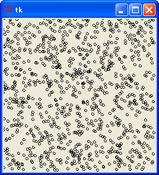

私たちが適当な数字を決める場合、サイコロを使えば 1 から 6 までの数字を簡単に決めることができます。たとえば、サイコロを振って出た目を記録したら次のようになったとしましょう。
5, 2, 1, 2, 6, 3, 4, 3, 1, 5, .....
サイコロの目はイカサマをしないかぎり、出る確率が 1 / 6 で規則性はまったくありません。したがって、数字の出る順番には規則性はなく、まったくでたらめになります。いま 2 が出たから次は 1 が出るとか、3, 4 と続いたから次は 5 が出るなどのように、前に出た数字から次に出る数字を予測することはできないのです。このように、でたらめに並んだ数列を「乱数列 (random sequence) 」といい、乱数列の中の一つ一つの数字を「乱数 (random numbers) 」といいます。
コンピュータは決められた手順（プログラム）を高速に実行することは得意なのですが、まったくでたらめの数を作れといわれると、とたんに困ってしまいます。そこで、何かしらの数式をプログラムして、それを実行することで乱数を発生させます。厳密にいえば乱数ではありませんが、それを乱数としてみなして使うことにするのです。このような乱数を「疑似乱数 (pseudo-random numbers) 」といいます。
擬似乱数の中で最も基本的なものが「整数の一様乱数」です。これは、ある範囲の整数値が等確率で現れる乱数のことです。一様乱数を生成するアルゴリズムはいろいろ考案されていますが、今回はその中で線形合同法 (linear congruential method) と M 系列乱数 (M-sequence random numbers) について説明します。
線形合同法は適当な初期値からスタートして、次の漸化式で乱数を生成します。
Xi = (A * Xi-1 + C) mod M
これで 0 以上 M 未満の値を生成することができます。A, C, M の選び方は 参考文献 [2] より引用します。
M が 2 の累乗なら A mod 8 を 5 または 3 とし（5 の方が安全）、定数項 C を奇数とする。このとき、周期はちょうど M となり、その 1 周期分には 0 から M - 1 までの整数が 1 個ずつ現れる。
高速にするには C = 0 とし、初期値 X0 を奇数にする。ただし、周期は M / 4 になる。
C = 0 の場合を「乗算合同法」といいます。初期値のことを「種 (seed) 」と呼ぶ場合があります。それでは実際にプログラムを作って確かめてみます。簡単な例として、M を 16 にして 0 - 15 の乱数を生成してみましょう。
リスト : 線形合同法（その１）
# 初期値
seed1 = 1
seed2 = 1
def rand1():
global seed1
seed1 = (13 * seed1 + 1) % 16
return seed1
def rand2():
global seed2
seed2 = (13 * seed2) % 16
return seed2
if __name__ == '__main__':
for i in xrange(16):
print "%2d : %2d" % (rand1(), rand2())
関数 rand1 は、1 周期が 16 で 0 から 15 までの値を 1 個ずつ生成します。関数 rand2 は 1 周期が 4 になるので、4 種類の値しか生成しません。実行結果は次のようになります。
r1 : r2 (r1 = rand1(), r2 = rand2() ) ------- 14 : 13 7 : 9 12 : 5 13 : 1 10 : 13 3 : 9 8 : 5 9 : 1 6 : 13 15 : 9 4 : 5 5 : 1 2 : 13 11 : 9 0 : 5 1 : 1
実際には M の値を 232 のように大きくして周期を長くします。簡単な例を示しましょう。
リスト : 線形合同法（その２）
# coding: utf-8
# rand1.py
# 定数
RAND_MAX = 0xffffffff
class Random:
def __init__(self, seed = 1):
self.seed = seed
def irand(self):
self.seed = (69069 * self.seed + 1) & RAND_MAX
return self.seed
if __name__ == '__main__':
a = Random()
for i in xrange(8):
print a.irand()
実行結果は次のようになります。
69070 475628535 3277404108 772999773 3877832058 3821835443 1662200408 2044158073
このように、線形合同法はとても簡単なアルゴリズムなのですが、使用上の注意点がいくつかあります。参考文献 [2] によると、線形合同法には一般に次の欠点があるそうです。
(1) 合同法乱数は、上位の桁はランダムだが、下位の桁はランダムでない
(2) 合同法乱数は、1 個ずつ使えばランダムだが、いくつか組にして使えばランダムでない
まず、(1) から説明します。線形合同法の場合、下位 k bit だけを見ると周期は高々 2 k になります。たとえば、線形合同法で生成した乱数 N から、0 以上 8 未満の乱数を作ってみましょう。この場合、N mod 8 として乱数を生成すると周期が 8 にしかなりません。下位 3 bit ではなく、上位 3 bit を使った方が良いようです。
それでは、実際に確かめてみましょう。線形合同法 (その２) のプログラムで、上位 3 bit と下位 3 bit の値を出力します。結果は次のようになりました。
irand L H (L:下位 3 bit, H:上位 3 bit)
------------------
69070, 6, 0
475628535, 7, 0
3277404108, 4, 6
772999773, 5, 1
3877832058, 2, 7
3821835443, 3, 7
1662200408, 0, 3
2044158073, 1, 3
3788989926, 6, 7
797919023, 7, 1
2743624612, 4, 5
1156259413, 5, 2
1059494674, 2, 1
584849259, 3, 1
786050992, 0, 1
3369345009, 1, 6
下位 3 bit で乱数を生成すると、周期が 8 にしかならないことがわかります。また、irand() の結果を見ると、偶数と奇数が交互に出現しています。これも線形合同法の特徴 (欠点) です。このように、線形合同法の下位の桁には規則性があるのです。
次は、もう一つの欠点 (2) を説明します。たとえば 0 から 15 までの乱数で、(x, y) の座標を生成することを考えます。ここで周期 16 の線形合同法で乱数を生成してみましょう。すると、生成される (x, y) の座標は 16 / 2 = 8 通りにしかなりません。(x, y) の座標は 256 個もあるのに、8 個の座標しか生成できないのです。(x, y, z) の場合は 4096 個の座標があるのに、16 個の座標しか生成できません。極端な例ですが、これが線形合同法の欠点 (2) なのです。
簡単な例として、最下位 8 bit で座標 (x, y) を生成し、それを図に示してみましょう。図は Tkinter を使うと簡単です。次のリストを見てください。
リスト : 最下位 8 ビットで (x, y) を生成
from Tkinter import *
import rand1
root = Tk()
c0 = Canvas(root, width = 256, height = 256)
c0.pack()
a = rand1.Random()
for _ in xrange(1000):
x = a.irand() % 256
y = a.irand() % 256
c0.create_oval(x - 2, y - 2, x + 2, y + 2)
root.mainloop()
結果は次のようになります。

このように、とても乱数とはいえない結果になりました。ご参考までに、最上位 8 bit を使った場合を示します。

もう一つ簡単な例を示しましょう。参考文献 [2] によると、乗数 A をうまく選ぶことで、欠点 (2) をあまり目立たないようにできるそうです。M = 232 のとき、良い乗数として 69069 などいくつかの値があり、よく使われる悪い乗数として 65539 があるそうです。そこで、この 2 つの値で乱数を発生させてみましょう。
乱数値は 0 から 255 とし、3 次元の座標 (x, y, z) を生成します。座標は 16,777,216 個ありますが、疑似乱数の性能が良ければ、重複する座標を生成することは少ないはずです。次のプログラムを見てください。
リスト : 乱数のテスト
# coding: utf-8
# 定数
RAND_MAX = 0xffffffff
class Random:
def __init__(self, seed = 1):
self.seed = seed
def irand(self):
self.seed = (69069 * self.seed + 1) & RAND_MAX
return self.seed
class Badrandom:
def __init__(self, seed = 1):
self.seed = seed
def irand(self):
# 69069 は良い, 65539 は悪い
self.seed = (65539 * self.seed + 1) & RAND_MAX
return self.seed
if __name__ == '__main__':
for gen in [Badrandom(), Random()]:
d = {}
for i in xrange(1, 11):
for _ in xrange(10000):
x = gen.irand() >> 24
y = gen.irand() >> 24
z = gen.irand() >> 24
k = (x, y, z)
if k not in d: d[k] = True
print i * 10000, len(d)
print '-----'
クラス Badrandom のメソッド irand は悪い乗数 65539 で、Random のメソッド irand が良い乗数 69069 を使っています。どちらの場合も最上位 8 bit を使って座標を生成します。
結果は次のようになりました。
回数 : Badrand Random ------------------------- 10000 : 9942, 9998 20000 : 19742, 19986 30000 : 29397, 29974 40000 : 38914, 39949 50000 : 48383, 49933 60000 : 57697, 59906 70000 : 66863, 69868 80000 : 75918, 79831 90000 : 84874, 89781 100000 : 93737, 99731
BadRandom は Random に比べて、新しい座標を生成する回数が少ないことがわかります。確かに 65539 は悪い乗数のようです。それにしても、乗数の違いによってこれだけ差が出るとはちょっと驚きました。なお、最下位 8 bit を使うと、Badrandom は 128 個、Random でも 256 個の座標しか生成できません。ご注意ください。
このように、線形合同法には「1 個ずつ使えばランダムだが、いくつか組にして使えばランダムでない。」という欠点があります。参考文献 [2] によると、このような欠点は 『いったん乱数を配列にプールしておき、その配列から乱数で選んだ場所の乱数を使うとよい。』 とのことです。
それでは、実際にプログラムを作って試してみましょう。次のリストを見てください。
リスト : 乱数の改良
# coding: utf-8
# rand2.py
# 定数
POOL_SIZE = 101
class Random:
def __init__(self, gen, seed = 1):
self.gen = gen(seed)
self.pool = [self.gen.irand() for _ in xrange(POOL_SIZE)]
self.next = POOL_SIZE - 1
def irand(self):
self.next = self.pool[self.next] % POOL_SIZE
x = self.pool[self.next]
self.pool[self.next] = self.gen.irand()
return x
if __name__ == '__main__':
import rand1
a = Random(rand1.Random)
for i in xrange(8):
print a.irand()
__init__ の引数 gen は実際に乱数を作るクラスです。乱数は配列 pool に格納します。大きさは POOL_SIZE (101) としました。最初に gen(seed) を実行して、乱数生成器を self.gen にセットします。そして、self.gen.irand() を呼び出して乱数を pool にセットします。乱数を生成するメソッド irand では、pool の next 番目の乱数を取り出して、その乱数から次の next を計算します。そして、この next 番目に格納されている値 x を乱数として返します。使用した場所には self.gen.irand() で新しい乱数をセットしておきます。
これでプログラムは完成です。それでは、最下位 8 bit を使って座標 (x, y) を生成してみましょう。結果は次のようになりました。

明確な規則性は現れていないようです。このように、線形合同法の乱数をプールすることで、その性能を改良することができます。
次は、Badrandom を改良してみましょう。結果は次のようになりました。
回数 : Badrand Random 改良版1 改良版2 ------------------------------------------ 10000 : 9942, 9998, 9996, 9978 20000 : 19742, 19986, 19986, 19915 30000 : 29397, 29974, 29979, 29807 40000 : 38914, 39949, 39961, 39613 50000 : 48383, 49933, 49937, 49390 60000 : 57697, 59906, 59901, 59156 70000 : 66863, 69868, 69857, 68821 80000 : 75918, 79831, 79823, 78473 90000 : 84874, 89781, 89767, 88067 100000 : 93737, 99731, 99717, 97635
改良版 1 は最上位 8 bit を使った場合で、改良版 2 は最下位 8 bit を使った場合です。性能の悪い Badrandom でも乱数を配列にプールすることで、改良版 1 では Random とほぼ同等の性能まで改良することができました。最下位 8 bit で座標を生成すると、改良版でも性能は少し落ちるようです。それでも、このような簡単な方法で、ここまで性能を改善できるとはちょっと驚きました。
ところで、Ｃ言語の標準ライブラリには乱数を生成する関数 rand があります。この関数は 0 から RAND_MAX (32767 以上の値) までの乱数を生成します。参考文献 [2] によると、ANSI C 規格書では次の定義例が示されています。
リスト : 関数 rand の定義例
static unsigned long int next = 1;
int rand(void) /* RAND_MAX を 32767 と仮定する */
{
next = next * 1103515245 + 12345;
return (unsigned int)(next / 65536) % 32768;
}
void srand(unsigned int seed)
{
next = seed;
}
これを Python でプログラムすると次のようになります。
リスト : Python 版 rand のプログラム
MASK = 0xffffffff
next = 1
# Ｃ言語の rand
def rand():
global next
next = (next * 1103515245 + 12345) & MASK;
return (next / 65536) % 32768;
def srand(seed):
global next
next = seed
線形合同法を使って乱数を生成していますが、内部では 32 bit 符号なし整数で計算し、
下位ビットを切り捨てて上位ビットを出力しています。したがって、rand() % 8 のように 0 から 7 までの乱数を生成しても、周期が 8 になることはありません。興味のある方は、実際に確かめてみてください。それから、線形合同法で乱数を発生させる場合、初期値（種：シード）が同じ値だと同じ乱数列が必ず発生することに注意してください。シードは上記リストの変数 next のように、ある定数で初期化されることが普通です。つまり、シードを変更しない限り、同じ乱数列が発生することになるのです。次のプログラムは実行するたびに同じ乱数列を表示します。
for _ in xrange(8): print rand()
違う乱数列を発生させるためには、シードを違う値に設定すればいいのです。シードを設定する関数が srand です。この設定に rand を使うことはできませんね。いちばん簡単な方法は、シードの設定に現在時刻を使うことです。次のリストを見てください。
import time srand(int(time.time())) for _ in xrange(8): print rand()
モジュール time の関数 time は現在時刻を浮動小数点数で返します。int は引数を整数値に変換する関数です。この値を使ってシードを設定すると、プログラムを実行するたびに違う乱数列を発生させることができます。
整数の次は実数です。参考文献 [2] によると、0 以上 1 未満の範囲の実数の一様乱数 U は、整数の一様乱数を生成する関数 rand を使って次式のように作ることができるそうです。
(1) U = (1.0 / (RAND_MAX + 1.0)) * (rand() + 0.5) (2) U = (1.0 / (RAND_MAX + 1.0)) * rand()
式 (1) は 『正確に 0 や 1 になることがないので、対数 log( U ) を求める際にも安心である。』 とのことですが、通常は式 (2) で十分だそうです。簡単なプログラムを示します。
リスト : 実数の乱数
# coding: utf-8
# rand1.py
# 定数
RAND_MAX = 0xffffffff
class Random:
def __init__(self, seed = 1):
self.seed = seed
def irand(self):
self.seed = (69069 * self.seed + 1) & RAND_MAX
return self.seed
def random1(self):
return (1.0 / (RAND_MAX + 1.0)) * (self.irand() + 0.5)
def random(self):
return (1.0 / (RAND_MAX + 1.0)) * self.irand()
if __name__ == '__main__':
a = Random()
for i in xrange(8):
print a.irand()
print '-----'
a = Random()
for i in xrange(8):
print a.random1()
print '-----'
a = Random()
for i in xrange(8):
print a.random()
簡単なプログラムなので説明は省略いたします。実行結果は次のようになります。
69070 475628535 3277404108 772999773 3877832058 3821835443 1662200408 2044158073 ----- 1.60817289725e-005 0.110740898061 0.763080108096 0.179978034808 0.902878134162 0.889840406249 0.387011190993 0.475942639983 ----- 1.60816125572e-005 0.110740897944 0.763080107979 0.179978034692 0.902878134046 0.889840406133 0.387011190876 0.475942639867
最後に乱数を使った応用例を示しましょう。乱数を使って数学や物理などの問題を解くアルゴリズムを「モンテカルロ法 (Monte Carlo methods) 」といいます。簡単な例として、円周率πをモンテカルロ法で求めてみます。
正方形の領域 (0 <= x < 1, 0 <= y < 1) に乱数で点を打ちます。乱数であれば点は領域内に一様に分布するので、x2 + y2 < 1 の円内に入る確率は π/4 になります。つまり、(円内の点の個数 / 点の総数) の値は 0.7853... になるはずです。たくさん点を打つほど値は π/4 に近づくはずですが、コンピュータの乱数は疑似乱数なので規則性が生じてしまい、値の精度にはどうしても限界があります。それでも、性能の良い疑似乱数ほど π/4 に近い値になるでしょう。プログラムは次のようになります。
リスト : モンテカルロ法（πを求める）
import rand1
a = rand1.Random()
n = 100000
for _ in xrange(5):
c = 0
for _ in xrange(n):
x = a.random()
y = a.random()
if x * x + y * y < 1.0: c += 1
print (c * 4.0) / n
簡単なプログラムなので説明は省略します。リストを読んでくださいね。それでは実行結果を示します。
3.1454 3.13528 3.13656 3.1368 3.14444
このように、乱数を使ってπの近似値を求めることができます。
今回は「M 系列乱数 (M-sequence random numbers) 」について取り上げます。M 系列は線形最大周期列 (Maximum length sequence) といって、次の漸化式で生成されるビット列のことです。
Xt = C1Xt-1 xor C2Xt-2 xor ..... xor CpXt-p Ci = 0 or 1
xor は排他的論理和です。実際には計算を簡単にするため、次の漸化式を用いることが多いようです。
Xt = Xt-p xor Xt-q p > q > 0
p と q の値には条件があり、多項式 Xp + Xq + 1 が mod 2 における p 次の原始多項式でなければいけません。この条件を満たすとき、生成されるビット列全体の周期は 2p - 1 になり、上記の漸化式で生成されるビット列の最大周期になるそうです。
(p, q) の値ですが、M 系列乱数の場合は (127, 63), (250, 103), (521, 32) など大きな値に設定したほうが良いようです。なお、難しい数学の話は本ページの範囲を超えるので説明は割愛します。ご了承ください。
それでは簡単な例として、p = 3, q = 1 で M 系列を生成してみましょう。次の図を見てください。
p q
(0) 0 0 1
p q *
(1) 0 0 1 1
p q *
(2) 0 0 1 1 1
p q *
(3) 0 0 1 1 1 0
p q *
(4) 0 0 1 1 1 0 1
p q *
(5) 0 0 1 1 1 0 1 0
p q *
(6) 0 0 1 1 1 0 1 0 0
p q *
(7) 0 0 1 1 1 0 1 0 0 1
図 : M 系列 (p = 3, q = 1)
M 系列を生成する場合、p 個の初期値が必要になります。上図では (0, 0, 1) としました。初期値を全て 0 に設定すると、0 だけしか出力されません。ご注意ください。
このように、p の位置にあるビットと q の位置にあるビットの排他的論理和を求めていくだけで、M 系列 "1 1 0 1 0 0 1" を生成することができます。(7) の最後の 3 ビットは初期値 (0, 0, 1) と同じですね。したがって、このあとは同じビット列が繰り返し生成されます。周期は 23 - 1 = 7 になります。
M 系列には乱数に向いている特徴がいくつかあります。まずは、0 と 1 の個数です。たとえば、M 系列 "1 1 0 1 0 0 1" において、0 は 3 個、1 は 4 個生成されています。1 の個数が 1 つだけ多いですね。これが M 系列の特徴で、一般に周期 2p - 1 で出現する 1 の個数は 2p-1 で、0 の個数は 2p-1 - 1 になります。したがって、長い周期の M 系列では、0 と 1 の出現確率はほぼ等しいと考えることができます。
次に、上図の M 系列で連続した 3 ビットのパターンを調べてみましょう。次の図を見てください。
1 1 0 1 0 0 1 1 1
-------
6
1 1 0 1 0 0 1 1 1
-------
5
1 1 0 1 0 0 1 1 1
-------
2
1 1 0 1 0 0 1 1 1
-------
4
1 1 0 1 0 0 1 1 1
-------
1
1 1 0 1 0 0 1 1 1
-------
3
1 1 0 1 0 0 1 1 1
-------
7
図 : M 系列のビットパターン
(0, 0, 0) を除いた全てのパターンが 1 回ずつ出現しています。つまり、周期 2p - 1 の M 系列は、p ビットのパターンを 1 回ずつ発生するのです。ただし、全てが 0 のパターンは除きます。また、連続した 2 ビットのバターンを調べてみると、(0, 0) が 1 回で、(0, 1), (1, 0), (1, 1) が 2 回ずつ出現しています。これも M 系列の特徴で、p ビット未満のパターンもほぼ均等に出現します。
このほかにも M 系列には優れた特徴があります。また、M 系列の生成はハードウェアでも「線形フィードバックシフトレジスタ (Linear Feedback Shift Register : LFSR) 」を用いて簡単に実現できるので、いろいろな分野で応用されています。
それでは、実際にプログラムを作って確かめてみましょう。次のリストを見てください。
リスト : M 系列の生成
# 定数
P = 4
Q = 1
MASK = 2 ** P - 1
class Msequence:
def __init__(self, seed = 1):
self.reg = seed & MASK
def output(self):
bit = ((self.reg >> (P - 1)) ^ (self.reg >> (Q - 1))) & 1
self.reg = (self.reg << 1 | bit) & MASK
return bit
# テスト
if __name__ == '__main__':
for x in xrange(16):
a = Msequence(x)
print x, ':',
for _ in xrange(15): print a.output(),
print
簡単な例題ということで、p = 4, q = 1 としました。M 系列を生成する場合、p 個前の出力が必要になります。そこで、出力したビット列を p ビットの整数値としてインスタンス変数 reg に格納することにします。ビットの生成はメソッド output で行います。ビットは reg を p - 1 回右シフトした値と q - 1 回右シフトした値の xor になります。この値を変数 bit にセットします。そして、reg を 1 回左シフトして、生成した bit を挿入します。あとは return で bit を返すだけです。
それでは、テストの実行結果を示します。
0 : 0 0 0 0 0 0 0 0 0 0 0 0 0 0 0 1 : 1 1 1 0 1 0 1 1 0 0 1 0 0 0 1 2 : 0 0 1 1 1 1 0 1 0 1 1 0 0 1 0 3 : 1 1 0 1 0 1 1 0 0 1 0 0 0 1 1 4 : 0 1 1 1 1 0 1 0 1 1 0 0 1 0 0 5 : 1 0 0 1 0 0 0 1 1 1 1 0 1 0 1 6 : 0 1 0 0 0 1 1 1 1 0 1 0 1 1 0 7 : 1 0 1 0 1 1 0 0 1 0 0 0 1 1 1 8 : 1 1 1 1 0 1 0 1 1 0 0 1 0 0 0 9 : 0 0 0 1 1 1 1 0 1 0 1 1 0 0 1 10 : 1 1 0 0 1 0 0 0 1 1 1 1 0 1 0 11 : 0 0 1 0 0 0 1 1 1 1 0 1 0 1 1 12 : 1 0 0 0 1 1 1 1 0 1 0 1 1 0 0 13 : 0 1 1 0 0 1 0 0 0 1 1 1 1 0 1 14 : 1 0 1 1 0 0 1 0 0 0 1 1 1 1 0 15 : 0 1 0 1 1 0 0 1 0 0 0 1 1 1 1
初期値が 0 の場合、M 系列の出力は全て 0 になります。上図を見ただけではよくわかりませんが、初期値が異なっていても同じビット列が生成されています。次の図を見てください。
1 1 1 0 1 0 1 1 0 0 1 0 0 0 1 1 1 1 0 1 0 1 1 0 0 1 0 0 0 1
----------------------------- 1
----------------------------- 2
----------------------------- 3
----------------------------- 4
----------------------------- 5
----------------------------- 6
----------------------------- 7
----------------------------- 8
----------------------------- 9
----------------------------- 10
----------------------------- 11
----------------------------- 12
----------------------------- 13
----------------------------- 14
----------------------------- 15
図 : M 系列と初期値の関係
このように、M 系列で生成されるビット列は初期値が異なっても同じになります。実は、1 つの原始多項式で生成できる M 系列は 1 通りしかありません。M 系列の初期値は、一周期のどこからスタートするかを決める役割しかないのです。これも M 系列の特徴です。線形合同法の種 (seed) とは違うことに注意してください。
M 系列で整数の一様乱数を生成する場合、整数の各ビットを M 系列に対応させます。そうすると、ビットごとの排他的論理和を計算するだけで乱数を生成することができます。このような方法を GFSR (generalized feedback shift register) 法といいます。簡単な例を示しましょう。次の図を見てください。
[1] 0 1 0 : 0 1 1 1 0 1 0
[0] 1 0 0 : 1 1 1 0 1 0 0
------- : ---------------------
1 2 0 1 3 3 2 1 2 0
図 : GFSR 法
p = 3, q = 1 の場合を考えます。各 M 系列の初期値を (1, 0, 0), (0, 1, 0) とすると、各 M 系列で生成されるビット列は上図のようになります。この場合、2 個の M 系列を使っているので、生成される整数値は 0 から 3 までになります。実際には、次のように整数値を xor していくだけです。
p q *
(1) 1 2 0 1
p q *
(2) 1 2 0 1 3
p q *
(3) 1 2 0 1 3 3
p q *
(4) 1 2 0 1 3 3 2
p q *
(5) 1 2 0 1 3 3 2 1
p q *
(6) 1 2 0 1 3 3 2 1 2
p q *
(7) 1 2 0 1 3 3 2 1 2 0
図 : GFSR 法による乱数の生成
初期値は (1, 2, 0) になるので、(1) は 1 xor 0 を計算して 1 になります。(2) は 2 xor 1 = 3 になり、(3) は 0 xor 3 = 3 になります。あとは、生成された整数値を xor していくだけです。
それでは実際にプログラムを作ってみましょう。簡単な例題ということで、p = 4, q = 1 で 3 ビットの整数値を生成します。プログラムは次のようになります。
リスト : M 系列乱数 (p = 4, q = 1)
# 定数
P = 4
Q = 1
class Msequence:
def __init__(self, seed):
self.buff = seed
self.p = 0
self.q = P - Q
def output(self):
self.buff[self.p] ^= self.buff[self.q]
x = self.buff[self.p]
self.p += 1
if self.p <= P: self.p = 0
self.q += 1
if self.q <= P: self.q = 0
return x
# テスト
if __name__ == '__main__':
a = Msequence([1, 2, 0, 4])
for _ in xrange(15): print a.output(),
初期値 seed は配列で指定します。この配列をリングバッファとして使います。次の図を見てください。
p q
(1) [1, 2, 0, 4] 1 xor 4 = 5
q p
(2) [5, 2, 0, 4] 2 xor 5 = 7
q p
(3) [5, 7, 0, 4] 0 xor 7 = 7
q p
(4) [5, 7, 7, 4] 7 xor 4 = 3
p q
(5) [5, 7, 7, 3] 3 xor 5 = 6
図 : 循環配列 (リングバッファ)
4 つ前の位置を p で、1 つ前の位置を q で表します。初期状態 (1) では、1 が 4 つ前のデータで、4 が 1 つ前のデータと考えてください。p の値は 0 で q の値が 3 になります。新しいデータは buff[p] ^ buff[q] で求め、その値 5 を buff[p] に書き込みます。それから、p と q を +1 します。もしも、配列の範囲を超えたら 0 に戻します。これで、今生成した値 5 が 1 つ前の値になり、2 が 4 つ前の値になります。あとはこれを繰り返すだけです。
メソッド output は、リングバッファをそのままプログラムしただけです。とくに難しいところはないでしょう。テストの実行結果は次のようになります。
5 7 7 3 6 1 6 5 3 2 4 1 2 0 4
このように、M 系列乱数のプログラムはとても簡単なのですが、難しい問題が一つだけあるのです。それは、初期値の設定です。M 系列乱数の場合、初期値の設定を誤ると悪い乱数が生成されてしまうのです。M 系列乱数を使う場合は、定評のあるプログラムを利用したほうがよいでしょう。
ご参考までに、参考文献 [2] のプログラムを Python で書き直したものを示します。
リスト : M 系列乱数 (p = 521, q = 32)
# 参考文献
# 奥村晴彦, 『Ｃ言語による最新アルゴリズム事典』, 技術評論社, 1991
# M 系列乱数 (389, 390 ページ)
# 定数
P = 521
Q = 32
BITS = 32
RAND_MAX = 0xffffffff
class Msequence:
def __init__(self, seed):
self.buff = seed
self.p = 0
self.q = P - Q
def irand(self):
self.buff[self.p] ^= self.buff[self.q]
value = self.buff[self.p]
self.p += 1
if self.p >= P: self.p = 0
self.q += 1
if self.q >= P: self.q = 0
return value
class Random(Msequence):
def __init__(self, seed = 1):
self.seed = seed
self.buff = []
self.p = 0
self.q = P - Q
# 初期化
# ビット単位でセットしているので遅い
# オリジナルのプログラムは高速
i = 0
seed_bits = []
for _ in xrange(P):
n = 0
for _ in xrange(BITS):
if i < P:
# 線形合同法の最上位ビットを使う
b = self._rand() >> (BITS - 1)
seed_bits.append(b)
n = (n << 1) | b
i += 1
if i == P: a = Msequence(seed_bits)
else:
n = (n << 1) | a.irand()
self.buff.append(n)
# warm up
for _ in xrange(P * 3): self.irand()
# 実数の一様乱数
def random(self):
return (1.0 / (RAND_MAX + 1.0)) * self.irand()
# 線形合同法
def _rand(self):
self.seed = (1566083941 * self.seed + 1) & RAND_MAX
return self.seed
# テスト
if __name__ == '__main__':
a = Random()
for _ in xrange(15): print a.irand()
このプログラムは p = 521, q = 32 なので、周期は 2521 - 1、10 進数で 156 桁にもなります。とても長い周期ですね。線形合同法と違って、長い周期を実現できるのが M 系列乱数の長所です。
初期化はビット単位で行い、buff[0] の MSB から順番にセットしていきます。最初の 521 ビット (0 - 520) は線形合同法でビットを決め、残りのビットは漸化式 bi = bi-521 xor bi-32 で決めています。つまり、最初の 521 ビットを初期値とした M 系列で残りのビットを初期化するわけです。
上記のリストは、わかりやすさを優先したためビット単位で初期化を行っています。このため、初期化処理がとても遅くなります。高速化についてはオリジナルのプログラムを参考にしてください。奥村先生の Web サイト 『C言語による最新アルゴリズム事典』 からダウンロードできます。奥村先生に感謝いたします。
テストの実行結果は次のようになります。
2935733368 3678107397 1302983582 4162958591 3535064524 2089930683 2139502598 2223582029
M 系列乱数は線形合同法よりも長い周期を実現できるだけではなく、初期値を正しく選べば多次元分布も良いことが知られています。簡単に言うと、M 系列乱数はいくつか組にして使ってもランダムになる、ということです。
たとえば、3 次元の座標 (x, y, z) で、x がある値のときの y - z の関係をグラフで表してみましょう。次のリストを見てください。
リスト : 乱数のテスト
from Tkinter import *
import rand1, mrand
root = Tk()
c0 = Canvas(root, width = 256, height = 256)
c0.pack()
a = rand1.Random()
c = 0
while c < 1000:
x = a.irand() >> 24
y = a.irand() >> 24
z = a.irand() >> 24
if x == 128:
c0.create_oval(y - 2, z - 2, y + 2, z + 2)
c += 1
root.mainloop()
座標の値は 0 - 255 とし、x が 128 のときの y - z の関係をグラフにします。線形合同法で悪い乗数 65539 を使うと、次のようになります。
 乗数 65539, x = 128 の y - z 関係
悪い乗数 65539 の場合、最上位 8 ビットを使っても、乱数とはいえない結果になりました。良い乗数 69069 を使うと、この欠点を改善することができます。
 乗数 69069, x = 128 の y - z 関係
M 系列乱数の場合、最上位 8 ビットと最下位 8 ビットどちらを乱数に使っても大丈夫です。
 M 系列最上位 8 ビット, x = 128 の y - z 関係
 M 系列最下位 8 ビット, x = 128 の y - z 関係
一般に、乱数 [0, 1.0) が k 次元で均等に分布しているならば、連続した k 個の乱数の積の総和を乱数の個数 n で割ると、その値は n を増やしていくと 1 / 2k に近づいていきます。たとえば、3 次元の場合は次のように計算できます。
(1 / n) * (X0X1X2 + X1X2X3 + ... + Xn-1XnXn+1 + XnXn+1Xn+2) => 1 / 8
この関係式を使って、線形合同法と M 系列乱数を比較してみましょう。プログラムは次のようになります。
リスト : 多次元分布のテスト
import rand1, mrand
def test(gen, k, n = 1000000):
c = 0.0
buff = []
for _ in xrange(k - 1):
buff.append(gen.random())
for _ in xrange(n):
buff.append(gen.random())
c += reduce(lambda x, y: x * y, buff)
del buff[0]
return c / n
for x in xrange(3, 10):
a = 1/float(2**x)
print a
b = test(rand1.Random(), x)
print b, "%.3f" % (abs(b - a) / a * 100)
c = test(mrand.Random(), x)
print c, "%.3f" % (abs(c - a) / a * 100)
関数 test は k 個の乱数を buff に格納し、reduce でその積を求めて c に加算します。あとは return で c / n を返すだけです。結果は次のようになりました。
表 : 多次元分布のテスト結果
k : 1/(2**k) : 線形合同法 : M 系列乱数
--:-------------:--------------------:--------------------
3 : 0.125 : 0.125369306 0.295 : 0.124895266 0.084
4 : 0.0625 : 0.062825018 0.520 : 0.062435920 0.103
5 : 0.03125 : 0.031496435 0.789 : 0.031203149 0.150
6 : 0.015625 : 0.015792916 1.075 : 0.015587046 0.243
7 : 0.0078125 : 0.007914697 1.308 : 0.007795475 0.218
8 : 0.00390625 : 0.003966663 1.547 : 0.003898806 0.191
9 : 0.001953125 : 0.001989527 1.864 : 0.001950206 0.149
線形合同法は良い乗数 69069 を使いました。次元が高くなるにしたがい、線形合同法の誤差 [%] は大きくなっていきますが、M 系列乱数の誤差はそれほど大きくなりません。M 系列乱数の多次元分布は線形合同法よりも良好のようです。
ところで、乱数の生成法は進歩していて、1997 年に松本眞氏と西村拓士氏によって開発されたメルセンヌツイスター (Mersenne Twister : MT) は、219937 - 1 という長い周期と 623 次元均等分布を実現しています。MT は現時点で最も優れた乱数生成法といわれています。ちなみに、Python のモジュール random は MT を使って乱数を生成しています。MT に興味のある方は Mersenne Twister Home Page をお読みください。